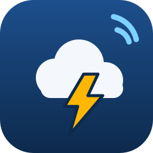

StormhopA convenience relay for hobby mesh channels. It is not a replacement for NOAA Weather Radio or Wireless Emergency Alerts, and messages can be delayed or lost. Do not rely on it for safety.
Status
- Plugin
- Checking…
NWS access
NWS asks API users to identify themselves. This address is sent in the User-Agent header and nowhere else.
Channels
Companion frame server
Area
Only alerts covering a selected county (or zone) are posted. Leave empty to relay the whole state.
Some watches and advisories are issued by zone, e.g. TXZ104. One per line.
Which alerts
Leave empty to allow every event type that meets the severity.
Save manually
Paste this into the plugin's Config dialog on the dashboard.